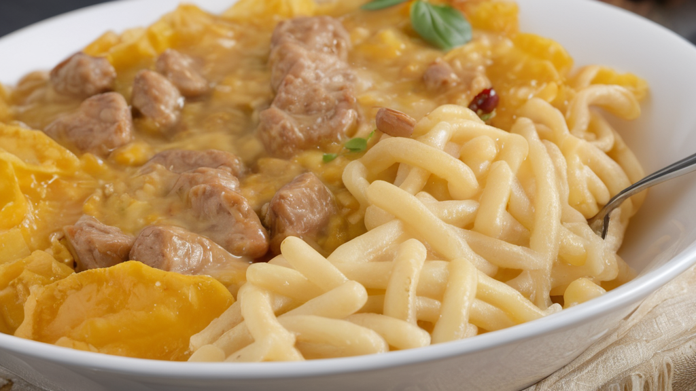

Hozzávalók:
- 500 g vaddisznó vagy szarvas hús, apró kockákra vágva
- 1 db vöröshagyma, finomra vágva
- 2 gerezd fokhagyma, apróra vágva
- 200 ml vörösbor
- 200 ml hús alaplé
- 2 ek liszt
- 2 ek vaj vagy olívaolaj
- Friss petrezselyem vagy kakukkfű a díszítéshez
- só
- bors
Elkészítés:
- Egy nagy serpenyőben hevítsük fel a vajat vagy olívaolajat közepes lángon.
- Adjuk hozzá a vöröshagymát és a fokhagymát, majd pároljuk 2-3 percig, amíg üvegesek lesznek.
- Tegyük hozzá a vaddisznó vagy szarvas húst a serpenyőhöz, és süssük 6-8 percig, amíg aranybarnásra pirul.
- Szórjuk meg a liszttel a húst és a hagymát, majd pirítsuk további 2-3 percig, hogy a liszt kissé megpiruljon.
- Öntsük hozzá a vörösbort, és főzzük, amíg a folyadék felére besűrűsödik.
- Adjuk hozzá a hús alaplevet, és főzzük további 10-15 percig, hogy az ízek összeérjenek és a mártás besűrűsödjön.
- Ízlés szerint sózzuk és borsozzuk meg.
- Tálalás előtt díszítsük friss petrezselyemmel vagy kakukkfűvel.
- Szolgáljuk fel forró főtt tésztával vagy párolt zöldségekkel.